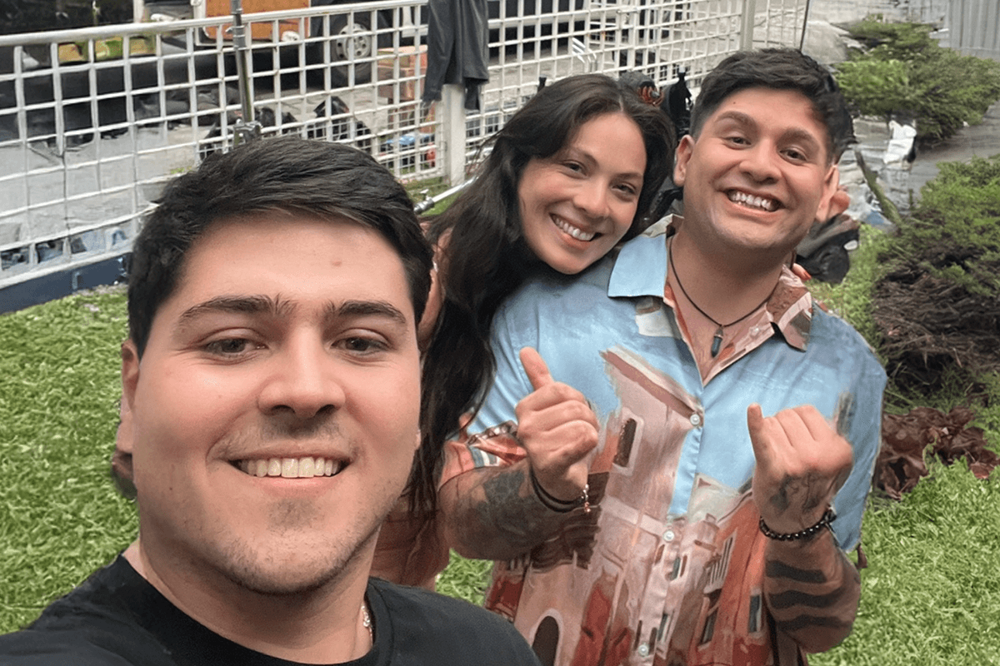
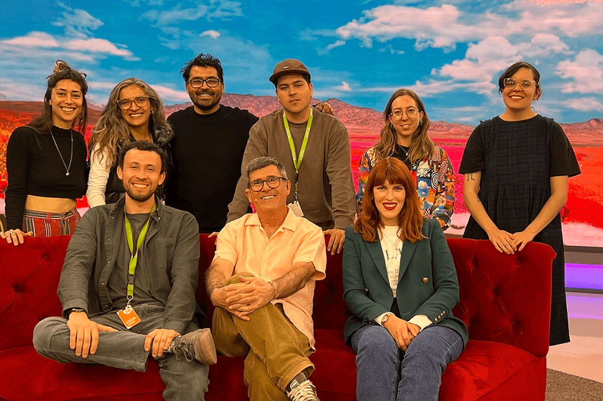
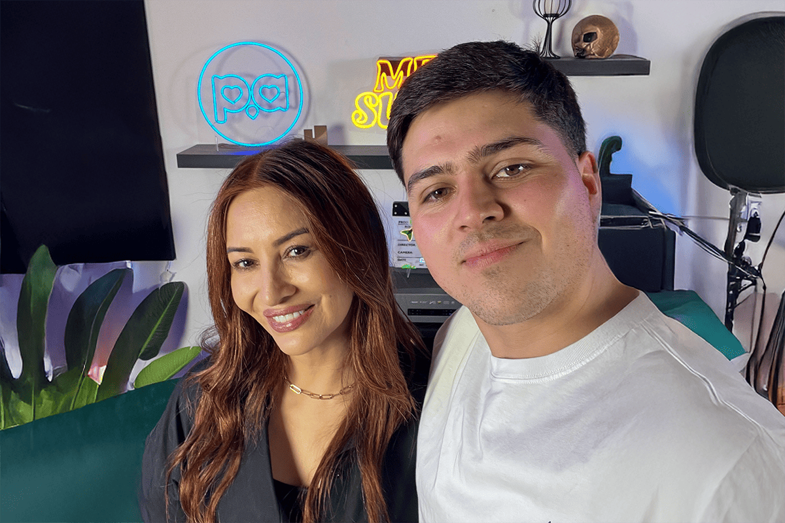

De una Agencia a una Startup
¿Cómo sucedió?
¿Cómo sucedió?

Imagínense la película Caza Fantasmas, pero en vez de cazar estos cuerpos etéreos, lo hacemos con talentos. Pues nos gusta tener los mejores en nuestro equipo.
Esta es la historia de Darío, un joven comunicador social que fue visto en plena acción mientras desarrollaba sus ágiles tareas para redes sociales.
Todo comenzó hace un tiempo atrás…
“En noviembre del 2023, entré como Content Manager en una agencia creativa y en febrero del año siguiente, Compara llegó a la corporación solicitando sus servicios.
Cuando en la agencia me comentaron que yo debía tomar el desafío de trabajar con Compara, se escuchaba como un terreno difícil, sabemos que el área de los seguros y productos financieros suele ser complicado a la hora de comunicar, pero a la vez mencionaron que la marca estaba dispuesta a hacer cosas entretenidas. “
Fue como una historia de amor, flechazo al instante. Darío estaba encantado de todo lo que veía y hacía para Compara, como nosotros con él. Pues, hemos vivido mucho desde que nos conocimos.
En el primer mes en el que llevaba la cuenta se realizó una producción audiovisual para la campaña “Compara lo importante” (por la que ganamos un premio Effie hace poquito). Tremenda producción, nunca había participado de algo así, muchas personas detrás de cámara, directores, productores, montajistas, actores y mi parte favorita: el catering.

Pero lo que Darío no sabía es que era el principio de algo cada vez más grande y con muchas cositas sucediendo.
Empezaron a salir más proyectos de la mano de la agencia y el gran equipo interno de Compara. Ideas que involucraban apañe, como por ejemplo, el podcast “Wena Compare” el cual me tocó asistir todas las semanas durante 2 temporadas, algo así como 5 meses de grabación. En medio de esto, se hicieron muchas otras cosas entretenidas también; entrevistas en la calle, colaboraciones con influencers, concursos, etc.
Nuestro futuro Content y Community Specialist iba divisando como Compara se iba transformando y mutando con este nuevo branding que iba emergiendo de a poco. Hasta que llegó la propuesta y dejaría de verlo con una pata afuera y otra adentro.
La oportunidad que me presentó Javi de entrar al equipo de Brand de Compara y seguir trabajando con ellos, pero ahora de manera interna, inconscientemente era lo que estaba esperando. Lo gratificante que fue la sensación de recibir esta oferta de trabajo, a nivel profesional, sería un paso importante.
Llegó el gran día, Darío empezó oficialmente en Compara, esto fue lo que nos contó:
“Los primeros días fueron una mezcla de emociones un poco extrañas. Estaba muy feliz de este paso y me sentía muy cómodo con el equipo, como si llevara trabajando años con ellos y eso era lo extraño. Si bien, ya llevaba 6 meses trabajando con Jo y Javier, teniendo una relación laboral impecable, el recibimiento de Tati, Charlie, Dana, Bruno, Roa y todos los chicos del equipo de marketing fue excepcional.
Con el paso de los días me di cuenta de que lo que veía y escuchaba de manera externa de Compara, como por ejemplo que la cultura en la empresa era amigable, cercana entre sí, innovadora, flexible, entre otras cosas, era real.“

Cómo les spoileamos al principio, esto fue un flechazo, un amor a primera vista. Nos pone felices que hayamos sido correspondidos.
Darío ya hace … meses que trabaja en Compara. Es muy creativo, lleva nuestras redes sociales con estilo y elegancia. -Lo último fue un chiste, pero no sonó tan bien, sepan disculpar-
Gracias por leernos una vez más y a nuesto Content y Community Specialist por ser parte de El Comparador.
 Actualidad
ActualidadEl recordado programa noventero “Venga Conmigo” marcó a toda una generación en Chile. Su exitoso segmento “Corazones Service” se transformó…
 Actualidad
ActualidadHace aproximadamente 2 meses comenzamos con el cierre de lo que empezó en julio como el “Compariniverse”.
 Actualidad
ActualidadHace unos meses lanzamos Compariniverse: la primera campaña en Chile protagonizada por una celebridad completamente clonada con IA.